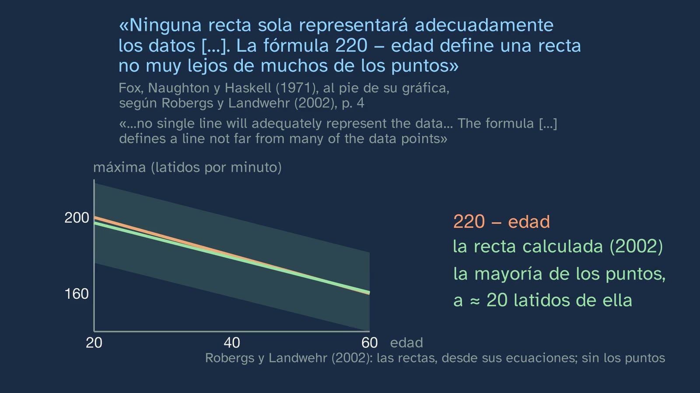
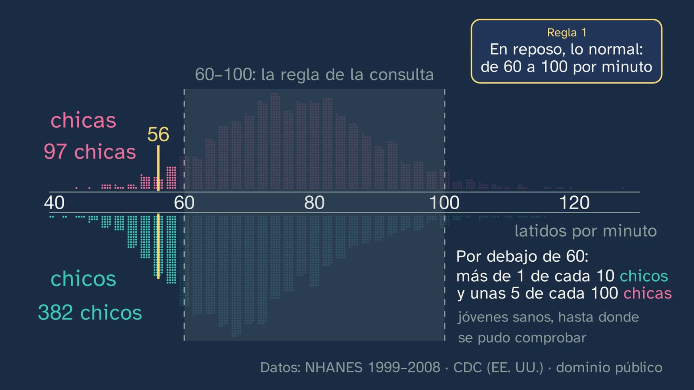
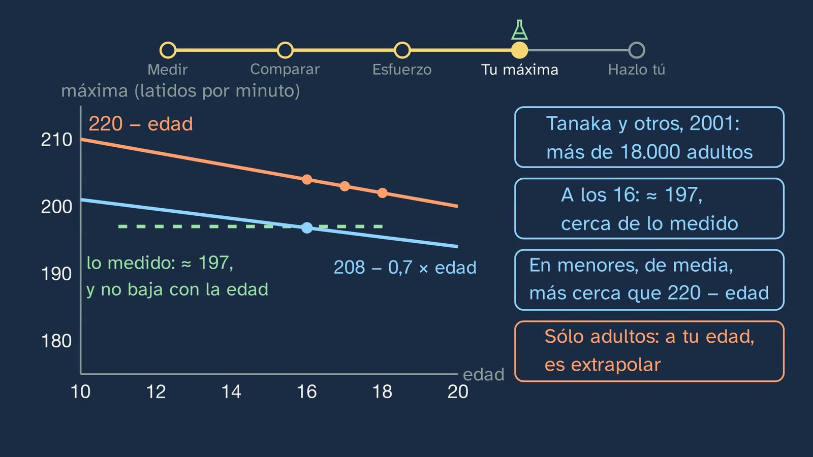
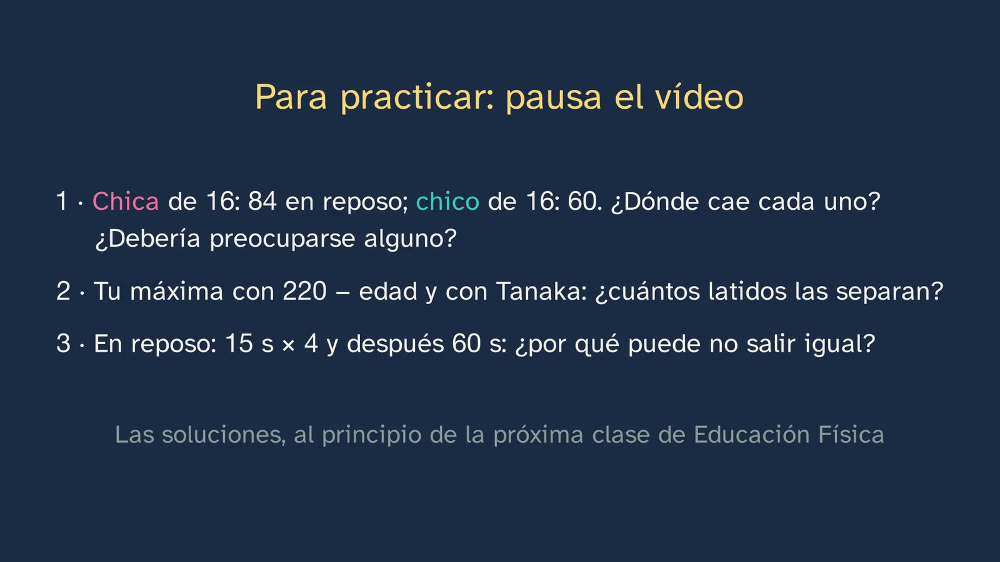

El pulso, el primer dato de tu cuerpo
En pocas palabras
Es el primer laboratorio del cuerpo del canal: el alumnado se mide durante el vídeo, que hace de cronómetro y de metrónomo, y compara su número con datos reales de chicos y chicas de su edad. Se ponen a prueba dos reglas que se oyen mil veces: «en reposo, lo normal es de 60 a 100» y «tu máxima es 220 menos tu edad».
La clase abre con lo que sabe un corazón entrenado (late más despacio en reposo) y las soluciones de la clase 1. El gancho es de dónde salió 220 − edad: de una revisión de 1971 sobre la prevención de las enfermedades del corazón (Fox, Naughton y Haskell), con unos 35 puntos de una decena de estudios y la fórmula, sacada a ojo, al pie de una gráfica cuyos autores avisaban de que ninguna recta representaba bien los datos. En 2002, Robergs y Landwehr calcularon la recta de esos mismos puntos y no salió 220 − edad.
Después, medir. Qué es lo que se nota: una onda de presión que recorre la pared de las arterias, más de diez veces más rápida que la sangre; la clase lo prueba con el electrocardiograma y la onda del pulso en el dedo de una persona real, medidos con el mismo reloj (en esa persona, la ola llega 0,27 s después de cada latido). Cómo se toma, en la muñeca y en el cuello, y por qué así. Y la primera medida, 30 s × 2, con el vídeo de cronómetro, y por qué el tiempo que cuentas decide el error.
Comparar. 4493 jóvenes de 16 a 19 años de la encuesta NHANES (CDC, Estados Unidos), uno a uno: los huecos entre columnas que deja el método (contaron 30 s × 2, como el alumno), las medianas (77 en las chicas y 69 en los chicos) y la regla de 60 a 100 frente a los datos: por debajo de 60 está más de 1 de cada 10 chicos y unas 5 de cada 100 chicas, jóvenes sanos hasta donde se pudo comprobar. La regla es «la definición de consenso clínico», un acuerdo de la consulta. La cuenta del corazón (sangre por minuto = sangre por latido × latidos por minuto) explica por qué un corazón entrenado suele latir más despacio y por qué las chicas, de media, algo más deprisa.
El esfuerzo, si se quiere y adaptado: 30 sentadillas en 45 s (el esfuerzo de la prueba de Ruffier, sin su índice), con el ritmo marcado por el vídeo; el pulso justo después (15 s × 4) y al minuto, con un reloj en pantalla y una apuesta en medio; por qué sube y por qué baja, y qué cambia al entrenar: con el mismo esfuerzo, el pulso suele subir menos (Surgeon General, 1996; HERITAGE, Wilmore y otros, 2001).
La máxima. Qué es, por qué no se mide uno solo y la regla 2 a prueba: la fórmula baja un latido por año y lo medido en adolescentes (unos 197 de media; Gelbart y otros, 2017) no baja; por eso, en 6 de los 7 estudios del metaanálisis de Cicone y otros (2019; 648 jóvenes), la fórmula da más que lo medido: a los 16, unos 4 latidos; con los más pequeños, algo más (unos 7 a los 11–13 años en la mayoría de los estudios del metaanálisis, y 9 en Gelbart a los 13,7). Tanaka (208 − 0,7 × edad) es mejor de media, pero se hizo con adultos; y con cada persona, cualquier fórmula puede fallar hasta unos 17 latidos (Gelbart y otros, 2017: casi todos, de 180 a 214). El error típico: «220 − edad es tu máxima». El cierre: las dos reglas corregidas, lo que no se puede concluir, el «Hazlo tú» y el enigma de la clase 3: si tu máxima sólo se mide hasta el agotamiento, ¿cómo se mide tu forma física sin hacerte daño?
Objetivo. Al terminar, el alumnado sabrá tomarse el pulso en reposo y después de un esfuerzo suave, saber si es normal para su edad, estimar su frecuencia cardiaca máxima con una fórmula y explicar por qué una fórmula da la media de mucha gente y no su número.
Currículo
Real Decreto 243/2022, Educación Física, materia común de 1.º de Bachillerato. Citas comprobadas en el texto del laboratorio, copia del consolidado del BOE (comprobado el 05/10/2026 al diseñar el tema).
| Elemento | Qué dice el decreto | Dónde se trabaja |
|---|---|---|
| Saber básico (bloque A, «Vida activa y saludable», salud física) | «Autoevaluación de las capacidades físicas y coordinativas (como requisito previo a la planificación): técnicas, estrategias y herramientas de medida.» | Toda la clase: una herramienta de medida (el pulso), con su técnica (dónde y cómo se toma, 5:39), su estrategia (cuánto rato contar y por qué, 7:39 y 15:02) y su comparación con datos (8:30–11:12) |
| Competencia específica 1 | «Interiorizar el desarrollo de un estilo de vida activo y saludable, planificando responsable y conscientemente su actividad física a partir de la autoevaluación personal en base a parámetros científicos y evaluables…» | La autoevaluación con un parámetro científico y evaluable: tu pulso, medido bien y comparado con los de tu edad, no con una regla |
| Descriptor STEM2 (de la CE1) | «… utilizando herramientas e instrumentos adecuados, apreciando la importancia de la precisión y la veracidad y mostrando una actitud crítica acerca del alcance y limitaciones de los métodos empleados.» | La precisión de contar 60, 30 o 15 s (7:39); el método que se ve en los datos (9:33–9:47); el alcance y los límites de una fórmula (17:37–20:18) y de cada estudio (sus fichas, con «lo que no puede decir») |
| Criterio 1.1 | «Planificar, elaborar y poner en práctica de manera autónoma un programa personal de actividad física […] evaluando los resultados obtenidos.» | El punto de partida medible del programa del tema 3: tu pulso en reposo y tus tres números con el mismo esfuerzo, que se repiten dentro de unos meses (21:20) |
| Criterio 1.2 | «Incorporar de forma autónoma, y según sus preferencias personales, los procesos de activación corporal, autorregulación y dosificación del esfuerzo…» | El pulso como medida del esfuerzo: cómo sube y cómo baja (12:53–16:28); la máxima, «para saber cuánto te esfuerzas, y dosificarlo» (16:59) |
| Criterio 1.4 | «… aplicando con autonomía e independencia criterios científicos de validez, fiabilidad y objetividad a la información recibida.» | Dos informaciones recibidas, puestas a prueba con datos: la regla de 60 a 100 (10:47–11:12) y 220 − edad (2:41–3:17 y 17:37–20:05) |
El decreto no nombra el pulso, ni ninguna fórmula. Son la concreción del canal dentro de «técnicas, estrategias y herramientas de medida» (ficha del tema, apartado «Por qué este tema, y así»). Castilla y León pide en 1.º «diferentes mecanismos de control de la intensidad», y Cataluña lleva a la ESO «la freqüència cardíaca com a indicador d'intensitat i recuperació»: un alumno puede traer el pulso de la ESO y otro no, y la clase lo enseña desde cero.
Lo que hay que traer. De la ESO, el «control de resultados y variables fisiológicas básicas» (3.º y 4.º) y los «criterios científicos de validez, fiabilidad y objetividad» (criterio 1.5 de 3.º y 4.º); de Biología y Geología, la anatomía y la fisiología básicas del aparato circulatorio. Para la cuenta del corazón basta con multiplicar.
Cómo está construida la clase
Capítulos del vídeo
| Parte | Qué pasa | Por qué así |
|---|---|---|
| Lo que ya sabes y las soluciones | Qué le pasa a un corazón entrenado (0:25, pausa). Las tres soluciones de la clase 1, cada una con su enunciado (0:49–2:04) | Recuperar (Roediger y Karpicke, 2006) con una idea que la clase usará: hoy se explica por qué late más despacio |
| La fórmula de todos | Isidora plantea el gancho (2:31); la ficha de la revisión de 1971 y lo que escribieron al pie de su gráfica; el reanálisis de 2002 (2:41–3:17) | La ficha del estudio antes del resultado (la técnica de Jeff Nippard): quién, cuántos datos, cómo y qué no era |
| La misión | Dos reglas, a prueba, en cinco pasos, con su recorrido arriba (3:52–4:13) | Un laboratorio con su hipótesis a la vista (ADR-116): las tarjetas de las dos reglas vuelven en cada paso |
| Medir | La ola de cada latido (esquema, 4:32) y su prueba con datos reales (5:05); la muñeca y el cuello (5:39–5:57); la primera cuenta, con el vídeo de cronómetro (6:35–7:25); por qué el tiempo decide el error (7:39) | «¿Cómo lo sabemos?»: la onda se ve llegar 0,27 s después del latido, en el mismo aparato. Medir antes de comparar |
| ¿Es normal mi pulso? | La apuesta (56: ¿bien o preocupante?, 8:08); la ficha de NHANES (8:30–8:54); 4493 puntos; los huecos que deja el método (9:33–9:47); las medianas y «¿dónde caes tú?» (10:05); la regla frente a los datos (10:47–11:12); cuándo ir al médico (11:33) | Predecir antes de ver; cada persona, un punto, y lo típico sale de ellos (la técnica de The Pudding); el alumno busca su sitio |
| ¿Por qué no todos igual? | La cuenta del corazón, vacía y luego con el dato vivo (11:54); el corazón entrenado y las chicas (12:26) | Pensar lo que se calcula (ADR-099): leer la ecuación, qué pasa si crece la sangre por latido |
| Un esfuerzo suave | La sentadilla real (CMU), adaptable y con su salida (12:53–13:27); 30 en 45 s con el ritmo del vídeo (13:46); 15 s × 4 justo después y al minuto, con un reloj y una apuesta en medio (14:41–15:34); tu bajada frente a tu apuesta (15:56); por qué sube y por qué baja, y qué cambia al entrenar (16:04–16:28) | El vídeo es el instrumento: la segunda cuenta empieza al minuto de parar. Lo práctico se propone, nunca se manda (ADR-119) |
| Tu pulso máximo | Qué es y por qué no se mide uno solo (16:59); la forma vacía 220 − □ y lo que dice su pendiente (17:37); ¿baja un latido por año? (17:56, pausa); lo medido en adolescentes (18:11–18:41); Tanaka (19:06); tú no eres la media (19:38) | La idea y los datos, en dos tiempos; una vez despacio (16 años) y el resto a velocidad |
| El error típico y la conclusión | «220 − edad es tu máxima», desmontado; si hay que estimarla, Tanaka con su margen (20:05–20:18); las dos reglas corregidas y lo que no se puede concluir (20:38–21:04) | El error, a la vista (Muller y otros, 2008) |
| Hazlo tú y para practicar | El experimento en casa, si se quiere (21:20); los datos públicos (21:54); el resumen, tres ejercicios, la pregunta abierta y el enigma de la clase 3 (22:08–23:29) | Espaciar y autoevaluarse (CE1) |
Puentes con otras materias. Matemáticas: la mediana frente a la media; la pendiente de una recta («−1 latido por año» frente a «−0,7»); la diferencia entre las dos fórmulas, 12 − 0,3 × edad, que se anula a los 40 años (Tanaka, 2001, p. 155); la regresión y su error típico (el reanálisis de 2002). Biología, Geología y Ciencias Ambientales: el aparato circulatorio, el gasto cardiaco y el sistema nervioso autónomo (el vago y los simpáticos). Física y Química: una onda que viaja mucho más deprisa que el medio que la lleva; los modelos y sus límites.
Plan de una sesión de 50 minutos
Pensado para verlo en el pabellón con proyector, porque el vídeo pide moverse. Si se ve en casa, como clase invertida, la sesión puede ser entera de laboratorio (la actividad de abajo).
| Minutos | Qué se hace |
|---|---|
| 0–3 | Sin vídeo. «Antes de empezar», en la hoja: cuántos latidos creen tener en reposo y cuál creen que es su máxima. Para sí. |
| 3–12 | Vídeo hasta 6:43. Todos sentados: la primera cuenta, con el vídeo. Cada cual apunta su número en la tabla de «Tu laboratorio». |
| 12–22 | Vídeo hasta 12:53. Parar en 8:08 (la apuesta del 56, a mano alzada) y en 10:05 (¿dónde caes tú?). |
| 22–30 | El esfuerzo, con el vídeo (12:53–15:34): quien quiera y pueda, de pie; el resto, mirando y apuntando. Las dos cuentas. |
| 30–40 | Vídeo hasta el final. Parar en 17:56 (¿baja un latido por año?). |
| 40–50 | Por parejas: los tres números de cada uno, la bajada en un minuto y la máxima con dos fórmulas (ejercicio 2), sin enseñarlos a nadie más. Puesta en común del método, nunca de los números. |
Errores típicos y cómo se tratan
- «220 − edad es tu máxima.» Es la fórmula de casi todos los manuales. No salió de un experimento: Fox, Naughton y Haskell (1971) la dieron en el pie de una figura de una revisión, sacada a ojo sobre unos 35 puntos de una decena de estudios, y escribieron que «no single line will adequately represent the data» (según Robergs y Landwehr, 2002, p. 4, que citan el pie entero: «The formula maximum heart rate = 220 − age in years defines a line not far from many of the data points»). Robergs y Landwehr ajustaron una recta a esos mismos puntos: 215,4 − 0,91 × edad, con un error típico de 21 latidos. En menores de 18, el metaanálisis de Cicone y otros (2019; 7 artículos, 648 jóvenes) la encuentra por encima de lo medido en 6 de los 7, y de media 12,4 latidos (± 16,2). La clase no da esa media: los estudios son muy distintos entre sí (I² = 94,6 %), la calidad de cada estudio explica la mayor parte de la diferencia (R² = 57,8 %) y la media la arrastra uno con máximas medidas muy bajas (Colantonio y Kiss, 2013: 178–184). A los 16, la diferencia es menor (204 frente a unos 197–201 medidos de media en adolescentes), porque el problema de fondo es la pendiente: la máxima de un adolescente apenas cambia con la edad (Gelbart y otros, 2017: en 433 deportistas de 13,7 ± 2,1 años, la edad no la predecía), y la fórmula la hace bajar un latido por año. La clase lo desmonta en 17:37–20:05.



- «Por debajo de 60, algo va mal.» La regla de 60 a 100 es la definición de «"clinical consensus"» (Ostchega y otros, 2011, pp. 2–3), útil en la consulta. En NHANES, por debajo de 60 está el 13,5 % de los chicos de 16 a 19 años (ponderado; 382 de 2413 en la muestra) y el 4,9 % de las chicas (97 de 2080). El mismo informe cita una guía revisada, de 50 a 90. Lo que sí pide consulta, en 11:33.


- «Tanaka es la buena.» Es mejor de media en menores (Cicone y otros, 2019: −2,7 latidos), pero se hizo con adultos (Tanaka y otros, 2001: estudios con «adult subjects»; laboratorio, de 18 a 81 años), y en menores sólo da bien la media. Lo firme es otra cosa: la máxima varía mucho de una persona a otra. En 433 jóvenes deportistas, 197 ± 8,6 de media, y casi todos entre 180 y 214 (± 2 desviaciones típicas; Gelbart y otros, 2017); en adultos, Tanaka da una desviación de unos 10 latidos alrededor de su recta (p. 155). Ninguna fórmula que sólo mira la edad puede saber dónde cae cada uno. El metaanálisis de 2019 aconseja Tanaka sólo «if the use of age-based equations cannot be avoided».

- Contar 10 o 15 s en reposo «para ir más deprisa». Un latido de más pesa 6 o 4 latidos por minuto (7:39). En reposo, mejor 30 s o un minuto entero; tras un esfuerzo, al revés: enseguida y 15 s, porque el pulso empieza a bajar al parar (Nuffield Foundation, «Heart rate»; MedlinePlus). Aun así, el número sale algo por debajo del que se tenía mientras se movía (Bell y Bassey, 1996, British Journal of Sports Medicine, 30, 48–52).

- «Cuanto más baja el pulso en un minuto, más en forma estoy.» No es tan sencillo. Una revisión no lo sostiene como regla: de cinco estudios transversales, tres la vieron más rápida en los entrenados y dos no (Daanen y otros, 2012). Lo que sí está bien establecido es que, tras entrenar, con el mismo esfuerzo el pulso sube menos y cada latido echa más sangre: lo recoge el informe del Surgeon General (1996, p. 71, «posttraining heart rate is decreased at rest and during submaximal exercise») y lo midió HERITAGE en 631 personas sedentarias de 17 a 65 años tras 20 semanas de bicicleta (Wilmore y otros, 2001: «significant decreases in HR […] and significant increases in SV […] at 50 W»). La clase lo dice así en 16:28: para ver si mejoras, el mismo esfuerzo y compárate contigo.

- El índice de Ruffier como medida de la forma. La clase usa sólo su esfuerzo, no el índice, (P0 + P1 + P2 − 200) / 10. Su validez está poco estudiada: los pocos estudios que lo comparan con el consumo máximo de oxígeno son pequeños y lo encuentran poco fiable (Sartor y otros, 2016; Bruggeman y otros, 2020), así que no sirve para decir nada de la forma de nadie. Y sus baremos cambian de una fuente española a otra. Buen material para la clase 3, sobre la validez de las pruebas.
- Tomar el pulso con el pulgar, o apretar los dos lados del cuello. El pulgar tiene su propio pulso, que confunde (Clínica Universidad de Navarra; HealthLinkBC). En el cuello, nunca los dos lados a la vez, porque baja la sangre que llega a la cabeza (MedlinePlus; CUN); y suave, porque los barorreceptores del seno carotídeo frenan el corazón si se aprietan (CUN).
Preguntas y soluciones
Para y piensa (dentro del vídeo)
- ¿Qué le pasa a un corazón entrenado? (0:25) Se agranda un poco por dentro, echa más sangre en cada latido y, en reposo, suele latir más despacio (clase 1). Hoy se explica con la cuenta del corazón (11:54–12:26).
- Alguien de tu edad, sano, al que le sale 56: ¿bien o preocupante? (8:08) Puede ser perfectamente normal: más de 1 de cada 10 chicos de 16 a 19 años está por debajo de 60 (10:47). Lo que pide consulta es otra cosa (11:33).
- ¿Por qué hay huecos entre las columnas? (9:33) Porque contaron 30 s y multiplicaron por 2: todos los pulsos salen pares (9:47). En los datos nadie tiene 71, aunque en la vida sí puede haberlo.
- ¿Dónde caes tú? (10:05) Con las medianas de 77 (chicas) y 69 (chicos). Nadie tiene que decirlo en voz alta.

- ¿Cuánto bajará tu pulso en un minuto: 10, 20 o 40? (15:19) No hay una respuesta única: es la del propio alumno, que resta sus dos cuentas y la compara con su apuesta (15:56). Lo que se ve siempre es la forma de la bajada: deprisa el primer minuto y después más despacio (Peçanha y otros, 2014).
- ¿Baja un latido por año la máxima medida a los 12, a los 14 y a los 17? (17:56) No: en adolescentes ronda los 200 y apenas cambia con la edad (18:11).
Para practicar (las soluciones abren la clase 3)
- Una chica de 16 años tiene 84 en reposo y un chico, 60: di dónde cae cada uno frente a los de su edad, y si alguno debería preocuparse. La chica está por encima de la mediana de las chicas de 16 a 19 años (77), pero dentro de lo habitual: en NHANES, una de cada tres chicas tiene 84 o más (33,6 %, ponderado). El chico está por debajo de la mediana de los chicos (69), y por debajo de 60 está el 13,5 % de ellos: también es normal (cálculos con
materiales/pulsos-16-19.csv). Ninguno debería preocuparse por ese número solo: lo que pide consulta es un pulso en reposo que pasa a menudo de 100, muy lento sin hacer mucho deporte y con mareos, o muy irregular (11:33). Criterios: comparar cada uno con su grupo (chicas con chicas, chicos con chicos) y no con la regla de 60 a 100, y no confundir «lejos de la mediana» con «anormal». - Calcula tu máxima con 220 − edad y con Tanaka, y di cuántos latidos las separan. A los 16: 204 y 196,8 (≈ 197), 7,2 latidos; a los 17: 203 y 196,1, 6,9 latidos. En general, (220 − e) − (208 − 0,7e) = 12 − 0,3e: se separan menos cuanto mayor eres y se cruzan a los 40 (cálculos ejecutados). Para nota: ninguna de las dos es su número; con cada persona, hasta ±17.
- En reposo, sentado, cuenta tu pulso 15 s y multiplica por 4, y justo después un minuto entero: ¿por qué puede no salir igual? Contando 15 s, un latido de más o de menos son 4 por minuto; contando 60, uno solo. Además, el pulso varía un poco de un momento a otro (con la respiración, por ejemplo). Puede salir igual, por casualidad, y no por eso 15 s es igual de fino. Criterios: el factor (× 4, × 1), el error que se multiplica y que una sola medida igual no prueba nada.

Para seguir pensando. Si una fórmula puede equivocarse en 17 latidos contigo, ¿para qué sirve? No tiene respuesta de libro. Pistas para el debate, sin cerrarlo: una fórmula sirve cuando no se puede medir, para empezar con un orden de magnitud (y con su margen); sirve a un grupo (un entrenador con 30 alumnos) más que a una persona; y sirve para saber que hay que medirla si de verdad importa. También se puede discutir qué pasa si alguien entrena con zonas calculadas con una máxima 17 latidos por encima de la suya. El tema 3 vuelve a las zonas de intensidad.
Una actividad para el aula
Tu laboratorio, en el pabellón (unos 20 minutos, en parejas; trabaja la CE1 y los criterios 1.2 y 1.4).
- Sentados y tranquilos 4 minutos, como en NHANES. Cada cual se toma el pulso en la muñeca 30 s × 2 y 60 s; la pareja lo toma a la vez en el otro brazo. ¿Coinciden?
- Quien quiera y pueda, 30 sentadillas en 45 s con un metrónomo a 80 golpes por minuto, bajando con uno y subiendo con el siguiente (como en Sartor y otros, 2016), o con el vídeo, desde 13:46; el pulso 15 s × 4 nada más acabar y al minuto. Quien no, cronometra y apunta.
- Con la tabla de la clase (
materiales/pulsos-16-19.csv, abajo), la mediana y el percentil de cada uno en una hoja de cálculo, sin escribir nombres. - Discusión: ¿qué decimos con nuestro número, y qué no podemos decir? ¿Qué haría falta para medir la máxima de verdad, y por qué no se hace solo en casa?
Para el profesorado: nadie enseña sus números ni se compara con nadie; lo que se discute es el método. Quien tenga una lesión, un problema de salud o no quiera, cronometra. Si alguien se marea, se le sienta y se avisa según el protocolo del centro.
Recursos abiertos: datos y guías
| Recurso | Qué cubre | Cómo usarlo en clase |
|---|---|---|
materiales/pulsos-16-19.csv (junto a esta ficha) |
Los 4493 pulsos en reposo de NHANES 1999–2008 de 16 a 19 años, persona a persona, con su sexo y su peso muestral. Rehechos por el canal con las exclusiones de Ostchega y otros (2011): salen 2080 chicas y 2413 chicos frente a 2082 y 2411 publicados, y los percentiles, a un latido o menos | Medianas, percentiles y el reparto por debajo de 60 en una hoja de cálculo; por qué todos son pares |
| NHANES, CDC (https://wwwn.cdc.gov/nchs/nhanes/) | La encuesta de salud de Estados Unidos, con sus datos públicos (dominio público) | Buscar otras variables: tensión, talla, peso |
| Ostchega y otros (2011), NHSR 41 (https://www.cdc.gov/nchs/data/nhsr/nhsr041.pdf) | Los valores de referencia del pulso en reposo por edades y sexo | Leer una tabla de percentiles real |
| MedlinePlus en español, «Pulso» (https://medlineplus.gov/spanish/ency/article/003399.htm) | Cómo se toma el pulso, sus precauciones y los valores habituales | Una fuente de salud fiable, en español |
| PhysioNet, Vollmer y otros (2023) (https://doi.org/10.13026/wce5-fj54, CC BY 4.0) | Electrocardiograma y onda del pulso en el dedo, con el mismo reloj, de 13 adultos | Medir el retraso de la ola (para quien sepa algo de programación) |
Notas para el profesorado
- «Jóvenes sanos, hasta donde se pudo comprobar.» NHANES excluyó las medicinas con receta que cambian el pulso, las infecciones, los embarazos, el pulso irregular y el tiroides alterado, pero no pudo excluir las medicinas sin receta, y el propio informe pide no inferir que todos estuvieran sanos (Ostchega y otros, 2011, pp. 11–12).
- La ola. «Más de diez veces más rápida que la sangre» (Mynard y otros, 2020): en la aorta de un joven, la onda va a unos 5–6 m/s (Reference Values for Arterial Stiffness' Collaboration, 2010) y la sangre, de media, a unos 0,27 m/s (OpenStax). Con 5–6 m/s y menos de un metro hasta la mano, la ola llega en una fracción de segundo. En la persona del registro de PhysioNet (Vollmer y otros, 2023), 0,27 s desde la señal eléctrica hasta el dedo (calculado por el canal; el filtro del pulsioxímetro puede alargarlo algo).

- Por qué baja el pulso con el entrenamiento se discute todavía (el freno del vago o el propio marcapasos del corazón: Reimers y otros, 2018). La clase sólo usa la cuenta: si en reposo hace falta la misma sangre por minuto y cada latido echa más, bastan menos latidos (Surgeon General, 1996, p. 71: el gasto en reposo queda «essentially unchanged»).
- Las chicas. Su pulso en reposo es algo más alto de media; un corazón algo más pequeño, que echa menos sangre por latido, es una de las razones (British Heart Foundation), y hay indicios de diferencias en el propio marcapasos (Bernal y Moro, 2006, Revista Española de Cardiología, 59(6), 609–618).

- El cuello. La clase no enseña a tomar el pulso carotídeo a fondo: lo nombra con sus precauciones y propone la muñeca. Quien tenga placas diagnosticadas en las carótidas no debe tomarse el pulso ahí (Mayo Clinic).
Lo que la clase deja fuera, y por qué
- Las zonas de intensidad (porcentaje de la máxima y de la reserva, Karvonen, el esfuerzo percibido): van al tema 3, clase 2, donde se programa la intensidad (ficha del tema).
- El índice de Ruffier: se usa su esfuerzo, no su índice, por su validez dudosa (error 6).
- Los relojes y las apps: la clase 4.
- La variabilidad del pulso y el electrocardiograma: sólo se usa el electrocardiograma para ver cuándo late el corazón.
Fuentes
Currículo
- Real Decreto 243/2022, anexo II, Educación Física, texto consolidado (BOE): https://www.boe.es/buscar/act.php?id=BOE-A-2022-5521
El pulso en reposo
- Ostchega, Y., Porter, K. S., Hughes, J., Dillon, C. F. y Nwankwo, T. (2011). Resting pulse rate reference data for children, adolescents, and adults: United States, 1999–2008. National Health Statistics Reports, 41. Dominio público. https://www.cdc.gov/nchs/data/nhsr/nhsr041.pdf
- Fleming, S. y otros (2011). Normal ranges of heart rate and respiratory rate in children from birth to 18 years of age. The Lancet, 377, 1011–1018 (apéndice web, tabla 5).
La máxima
- Fox, S. M., Naughton, J. P. y Haskell, W. L. (1971). Physical activity and the prevention of coronary heart disease. Annals of Clinical Research, 3(6), 404–432 (PubMed 4945367).
- Robergs, R. A. y Landwehr, R. (2002). The surprising history of the «HRmax = 220 − age» equation. Journal of Exercise Physiology online, 5(2), 1–10.
- Tanaka, H., Monahan, K. D. y Seals, D. R. (2001). Age-predicted maximal heart rate revisited. JACC, 37(1), 153–156.
- Cicone, Z. S. y otros (2019). Research Quarterly for Exercise and Sport, 90(3), 417–428.
- Gelbart, M. y otros (2017). Clinical Journal of Sport Medicine, 27(2), 139–144. Mahon, A. D. y otros (2010). Research Quarterly for Exercise and Sport, 81(4), 466–471.
El cuerpo
- OpenStax, Anatomy and Physiology 2e, §19.4 y §20.2 (CC BY 4.0). Mynard, J. P. y otros (2020), Frontiers in Physiology, 11, 1085. Reference Values for Arterial Stiffness' Collaboration (2010), European Heart Journal, 31, 2338–2350.
- U.S. Surgeon General (1996), Physical Activity and Health, cap. 3. Reimers, A. K., Knapp, G. y Reimers, C.-D. (2018), Journal of Clinical Medicine, 7, 503. British Heart Foundation, «Heart rate: what's normal and how to check it».
- Wilmore, J. H. y otros (2001). Cardiac output and stroke volume changes with endurance training: the HERITAGE Family Study. Medicine and Science in Sports and Exercise, 33(1), 99–106. https://doi.org/10.1097/00005768-200101000-00016
- Cole, C. R. y otros (1999), NEJM, 341, 1351–1357. Daanen, H. A. M. y otros (2012), IJSPP, 7, 251–260.
- Cómo se toma: MedlinePlus, «Pulso»; Clínica Universidad de Navarra, Diccionario médico, «pulso carotídeo»; HealthLinkBC, «Taking a pulse»; Nuffield Foundation, «Heart rate». Cuándo consultar: Mayo Clinic; British Heart Foundation; NHS.
La prueba de Ruffier
- Universidad Complutense de Madrid, práctica de Fisiología «Pruebas de esfuerzo». Sartor, F. y otros (2016), PLoS One, 11, e0168154 (datos en Dryad, CC0). Bruggeman, B. S. y otros (2020), PLoS One, 15, e0238863.
Datos y movimiento
- Vollmer, M., Bläsing, D., Reiser, J. E., Nisser, M. y Buder, A. (2023). PhysioNet. https://doi.org/10.13026/wce5-fj54 (CC BY 4.0).
- CMU Graphics Lab Motion Capture Database (sujeto 13, toma 29): «The data used in this project was obtained from mocap.cs.cmu.edu. The database was created with funding from NSF EIA-0196217». Figuras: MakeHuman (CC0). Foto del pulso en la muñeca: U.S. Air Force, Staff Sgt. Jeanette Copeland (2004), dominio público. Ilustración del pulso en el cuello: BruceBlaus, Wikimedia Commons, «Pulse (Neck)», CC BY-SA 4.0 (recortada y sin fondo).
Sobre esta clase
Isidora es un personaje ilustrado y su voz es sintética. El guion lo escribió una IA (Claude, de Anthropic), lo revisó un agente independiente con la rúbrica del canal y lo aprobó una persona. Cada dato está comprobado en dos fuentes o en la original; los informes, con cada cita, están en el repositorio del canal. Si encuentras un error, dínoslo en el Ágora: aprender también es corregir.
Cómo citar esta ficha
GinCol Lab (2026). El pulso, el primer dato de tu cuerpo. Ficha docente de GinCol Lab: Educación Física · 1.º de Bachillerato · Tu cuerpo, tu laboratorio · Clase 2 de 4. https://gincollab.github.io/aula/educacion-fisica/t01-c2/. CC BY 4.0.
Ficha docente de GinCol Lab · CC BY 4.0 · Código fuente y erratas